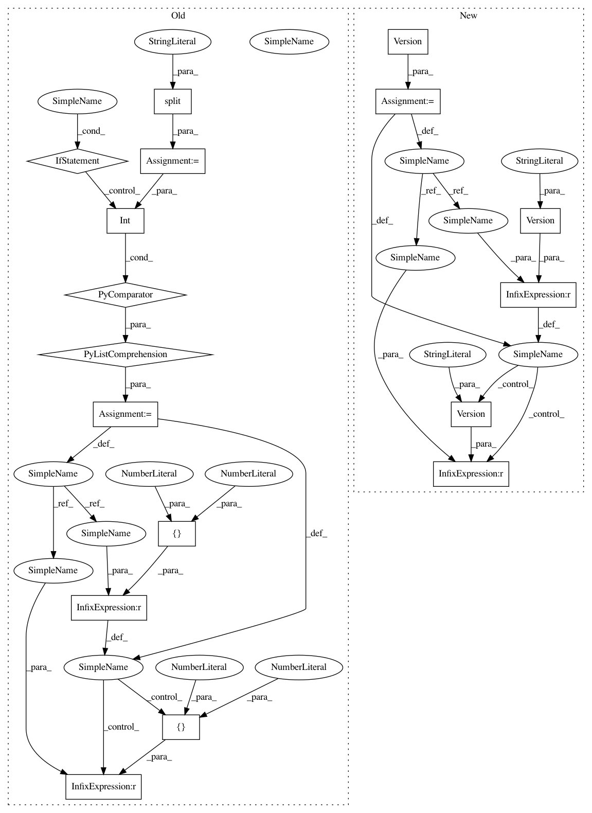

0e4c0fa892f2e895625c12b6d8fbca03de19c11b,src/sagemaker/cli/compatibility/v2/modifiers/framework_version.py,,_tf_py_version_default,#Any#,134
Before Change
Gets the py_version default based on framework_version for TensorFlow.
if not framework_version:
return "py2"
version = [int(s) for s in framework_version.split(".")]
if version < [1, 12]:
return "py2"
if version < [2, 2]:
return "py3"
return "py37"
After Change
return "py2"
try:
version = Version(framework_version)
except InvalidVersion:
return "py2"
if version < Version("1.12"):
return "py2"
if version < Version("2.2"):
return "py3"
return "py37"
In pattern: SUPERPATTERN
Frequency: 3
Non-data size: 17
Instances
Project Name: aws/sagemaker-python-sdk
Commit Name: 0e4c0fa892f2e895625c12b6d8fbca03de19c11b
Time: 2020-07-13
Author: 6631887+laurenyu@users.noreply.github.com
File Name: src/sagemaker/cli/compatibility/v2/modifiers/framework_version.py
Class Name:
Method Name: _tf_py_version_default
Project Name: aws/sagemaker-python-sdk
Commit Name: 413d05a220331196f5e98eb09e034d55e68cae6b
Time: 2020-07-14
Author: 6631887+laurenyu@users.noreply.github.com
File Name: tests/conftest.py
Class Name:
Method Name: tf_py_version
Project Name: aws/sagemaker-python-sdk
Commit Name: 0e4c0fa892f2e895625c12b6d8fbca03de19c11b
Time: 2020-07-13
Author: 6631887+laurenyu@users.noreply.github.com
File Name: src/sagemaker/cli/compatibility/v2/modifiers/framework_version.py
Class Name:
Method Name: _tf_py_version_default
Project Name: aws/sagemaker-python-sdk
Commit Name: c24e0b567e29bd0f3a7eb5175904c4aa334581b7
Time: 2020-06-25
Author: 6631887+laurenyu@users.noreply.github.com
File Name: tests/conftest.py
Class Name:
Method Name: tf_full_py_version